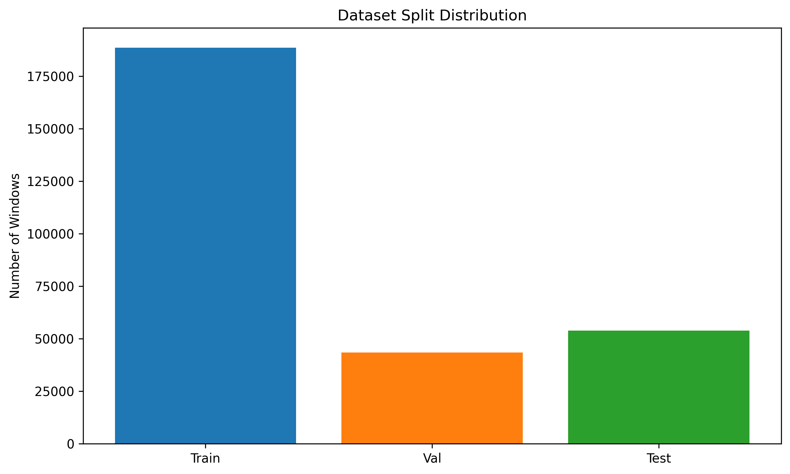
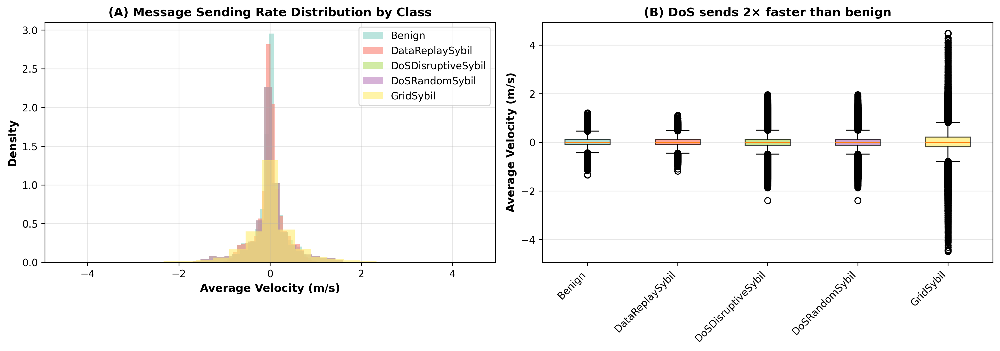
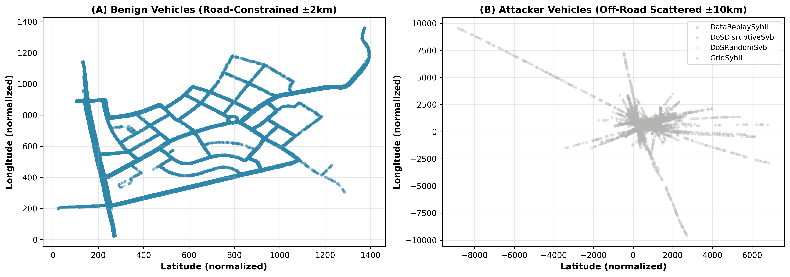
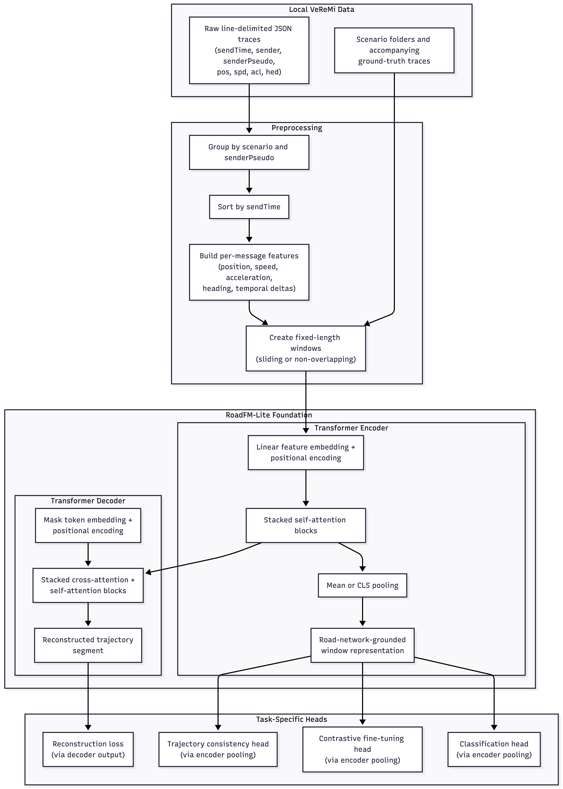

RoadFM-Lite: A Self-Supervised Foundation Model for Road-Network-Grounded Trajectory Representation with Application to Sybil Attack Detection
A benchmark-centered research proposal on data-efficient Sybil detection from vehicular message traces using self-supervised pretraining, leakage-safe preprocessing, and scenario-holdout evaluation.
Outline
- Introduction
Understanding Sybil attacks and problem context in VANETs. - Background and motivation
Why Sybil attacks in vehicular crowdsensing remain difficult to detect. - Research gap and thesis claim
What is missing in current literature and what RoadFM-Lite proposes. - Dataset and threat landscape
VeReMi structure, attack families, and leakage-safe split design. - Proposed methods
Encoder-decoder architecture, MTR, TCP, and downstream transfer. - Evaluation plan
Few-shot, zero-shot, scenario-holdout, baselines, metrics, and ablations. - Critical assessment
Strengths, weaknesses, and improvement suggestions for the proposal.
Review lens for this deck: this is a proposal, not a completed results paper. The emphasis is on research significance, methodological coherence, reproducibility, and whether the planned evaluation can support the thesis claims.
Understanding Sybil Attacks in VANETs
In Vehicular Ad-hoc Networks (VANETs), a Sybil attack occurs when a single physical entity claims multiple fictitious identities (ghost vehicles).
- Deception: Attackers broadcast conflicting or false messages (e.g., phantom traffic jams).
- Objective: Disrupt traffic management, create safety hazards, or manipulate routing protocols.
- Challenge: Recognizing that multiple localized vehicle signatures originate from the same malicious node.

Motivation and Problem Statement
- Vehicular crowdsensing rewards participation, creating an incentive for attackers to forge multiple fake vehicle identities.
- Sybil messages can appear locally plausible in position, speed, and heading, which weakens point-in-time plausibility checks.
- The real signal often appears across a window: replay artifacts, temporal inconsistencies, unrealistic motion changes, or persistent offsets.
- Practical detectors must work when labels are scarce and when traffic conditions shift across scenarios.
Fake traces can look reasonable at single timesteps while failing at sequence level.
Novel attacks appear faster than curated ground truth can be collected.
Methods trained on one split may degrade on other scenario groups.
Research Gap, Central Hypothesis, and Main Question
Raw vehicular traces are message-oriented, not model-ready trajectory windows.
Most vehicular Sybil work remains fully supervised.
Existing benchmark structure is underused for transfer evaluation.
Central hypothesis: self-supervised pretraining on road-network-grounded vehicular trajectory windows using reconstruction and consistency objectives should produce embeddings that outperform the same encoder trained from scratch, especially under few-shot supervision and scenario holdout.
Main research question: does a self-supervised trajectory foundation model trained on road-network-grounded vehicular message traces improve Sybil detection relative to supervised-only baselines, particularly under few-shot and scenario-holdout evaluation?
VeReMi Dataset Scope and Leakage-Safe Prepared Data
- Benign
- DataReplaySybil
- DoSDisruptiveSybil
- DoSRandomSybil
- GridSybil

Attack Families, Discriminative Signals, and Road-Network Grounding


Threat Model, Success Criteria, and Feasibility
- Constraint: single attacker with multiple forged pseudonyms
- Capability: can inject fabricated BSM trajectories into VeReMi or a live crowdsensing system
- Goal: claim rewards or corrupt the database
- Limitation: bound by SUMO physics or real road networks; cannot violate basic kinematics long-term
- Attack scope: window-level inconsistencies over T = 20 timesteps (~2 seconds)
- Primary: F1-score and AUROC on held-out test split
- Label efficiency: detectable improvement at K ∈ {5, 10, 20} with few labeled examples
- Generalization: lower degradation when tested on unseen scenario group (0709 ↔ 1416)
- Robustness: consistent performance across all four attack families
- Safe deployment: measurable precision and recall separation (not just accuracy)
- Benign: trajectories from legitimate SUMO vehicles with confirmed ground-truth traces
- Attack families: assigned by VeReMi scenario folder structure and accompanying ground-truth JSON
- Temporal scope: label is per-window; overlapping windows from the same source are labeled independently but assigned to only one split (no leakage)
- Availability: ~53.8k test windows with labels, split into five classes
RoadFM-Lite Architecture and End-to-End Processing Pipeline
Group raw JSON by scenario and sender pseudonym, sort by sendTime, build 13-dimensional message features, and create fixed windows.
Embed each timestep, add positional encoding, and produce a pooled window representation using mean or CLS pooling.
Use cross-attention over encoder states to reconstruct masked or corrupted positions during pretraining.
Discard the decoder for downstream detection and reuse only the pretrained encoder.

Main Learning Objectives and Downstream Transfer Strategy
Masked Trajectory Reconstruction
- Mask about 15% of timesteps.
- Decoder reconstructs original features using encoder context.
- Optimizes mean squared reconstruction loss.
- Goal: learn smooth, normal short-horizon motion regularities.
Trajectory Consistency Prediction
- Classify clean vs replay vs local shuffle vs speed-scale vs position-offset.
- Uses encoder pooling and cross-entropy supervision from synthetic corruptions.
- Goal: sensitize embeddings to Sybil-like temporal and spatial inconsistencies.
Downstream use of the encoder
- Few-shot supervised contrastive fine-tuning for K = 5, 10, 20.
- Zero-shot benign-memory retrieval.
- Full-supervision classification as an upper bound.
Implicit Road-Network Grounding and Novelty Positioning
- Not explicit: Does NOT require a road-graph input, map-matching pipeline, or external OSM data.
- Implicit via simulation: VeReMi is generated by SUMO running on the Luxembourg road network. Every position, speed, and heading reflects street-level movement.
- Why defensible: The encoder learns lane-following, intersection behavior, and speed-constrained motion patterns directly from the trajectory statistics.
- Advantage: Avoids map dependency, stays reproducible, and simplifies deployment.
RoadFM-Lite differs from generic trajectory SSL and anomaly detection by:
- Security-oriented pretraining (TCP uses Sybil-like corruptions, not generic augmentations)
- Benchmark-focused scope (leverages VeReMi structure for few-shot and holdout evaluation)
- Lossless preprocessing (no lossy feature engineering; uses raw kinematic fields)
| Dimension | TrajFM | UniTraj | Anom. Detect | RoadFM-Lite |
|---|---|---|---|---|
| Road net. input | Explicit graph | Explicit graph | None | Implicit (SUMO) |
| Domain | Generic mobility | Generic mobility | Generic anomaly | Security (Sybil) |
| Pretraining signal | Contrastive, region transfer | Masked + multi-task | Autoencoder + rules | MTR + TCP corruption |
| Corpus scale | 10M+ trajectories | 1B+ traces | Varies | 286k windows (focused) |
| Downstream focus | Prediction, retrieval | Multi-task, transfer | Binary anomaly | Few-shot Sybil detection |
| Few-shot tested | No | Limited | Rarely | Yes (K=5,10,20) |
| Scenario holdout eval | No | No | Not typical | Yes (0709 ↔ 1416) |
No Results Yet in the Proposal: Planned Experiments, Baselines, and Metrics
| Evaluation block | What will be tested | Why it matters |
|---|---|---|
| Few-shot | K = 5, 10, 20 labeled windows per class, supervised contrastive fine-tuning, repeated sampling. | Tests label efficiency, which is one of the proposal's central claims. |
| Zero-shot | Benign memory bank plus nearest-neighbor distance thresholding. | Tests whether the representation space itself separates normal and suspicious windows. |
| Scenario holdout | Train on 0709 and test on 1416, then reverse. | Measures robustness under traffic-condition shift instead of only within one curated split. |
| Baselines | Same encoder from scratch, feature-engineered Random Forest, supervised BiLSTM. | Separates the value of self-supervised pretraining from the value of sequence modeling alone. |
| Ablations | MTR only, TCP only, no pretraining, no delta features, window-length changes, lighter reconstruction head. | Tests whether the claimed components are actually responsible for downstream gains. |
Paper Strengths
- Clear problem relevance: the proposal targets a real security gap in vehicular crowdsensing where labels are limited and attackers evolve.
- Strong methods-to-problem alignment: the TCP corruption families are chosen to resemble Sybil-style replay, disorder, offsets, and speed perturbations.
- Reproducible benchmark framing: the proposal stays inside VeReMi, avoiding scope creep from external corpora and map dependencies.
- Leakage-aware preprocessing: sender-level or sequence-level split logic is explicitly treated as a core methodological issue.
- Novelty is focused, not inflated: the strongest claim is not “largest model,” but a security-oriented adaptation of trajectory foundation modeling.
- Evaluation is broader than one train/test split: few-shot, zero-shot, full supervision, and scenario holdout create a richer validation framework.
- Practical transfer story: if the hypothesis holds, the encoder could support rapid adaptation under limited supervision.
- Good thesis scope: compact enough for a master's thesis while still methodologically meaningful.
Weaknesses and Open Risks
- No reported empirical results yet. The proposal remains promising but unvalidated at this stage.
- Single simulated benchmark. VeReMi is useful and reproducible, but external validity to real deployments is still uncertain.
- Implicit road-network grounding. Some reviewers may question whether the “road-network-grounded” claim is sufficiently distinct from generic trajectory modeling without explicit road inputs.
- Operational details need sharper definition. Threshold selection, benign memory-bank construction, and statistical significance procedures are not fully specified.
- Baseline positioning needs care. The proposal must clearly explain why these baselines are sufficient against prior vehicular-security approaches.
- Novelty overlap risk. Reviewers may ask how RoadFM-Lite differs enough from existing trajectory SSL and anomaly modeling papers beyond domain adaptation.
Suggestions for Strengthening the Proposal and the Defense
- Add one concise threat-model slide clarifying attacker assumptions, what counts as success, and how labels are derived.
- State model size, training budget, and expected runtime so the committee can assess feasibility.
- Clarify what “road-network-grounded” means operationally and why implicit grounding is still a defensible contribution.
- Show how the proposal's novelty differs from TrajFM, UniTraj, and generic anomaly-detection literature in one direct comparison table.
- Include confidence intervals or repeated-trial statistics for few-shot experiments, not just mean scores.
- Add family-holdout or corruption-sensitivity tests to measure whether the encoder generalizes beyond attack types seen in training.
- Report calibration and false-positive behavior, since security deployments care about operational trust.
- Temper deployment claims until there is evidence beyond the simulated benchmark or out-of-domain validation.
Takeaways, Timeline, and Discussion Prompt
Discussion prompt for committee members: Is the current proposal strongest as a benchmark-centered thesis on data-efficient Sybil detection, or should it broaden its claims toward more general trajectory foundation modeling?